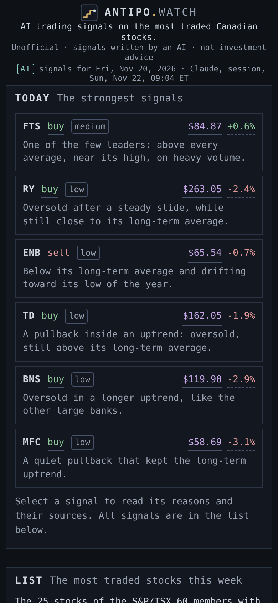
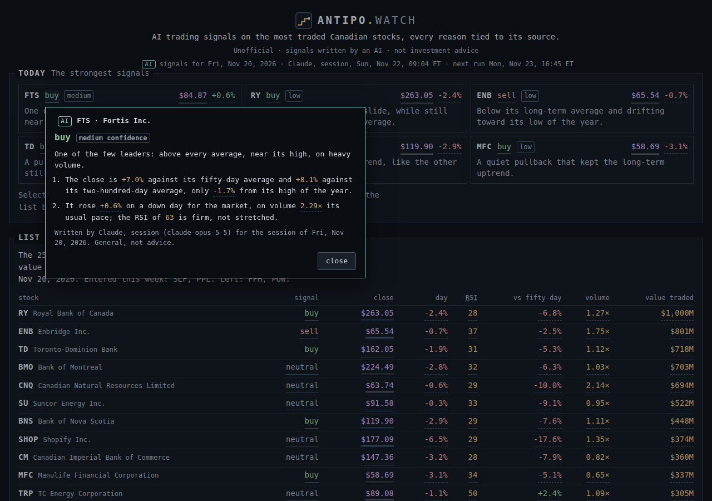

Loop 010 — The AI signal scanner
2026-11-22 · antipo.watch becomes a scanner: the most traded TSX stocks, indicators computed by code, signals written by Claude and checked by code, a track record. The IPO page moves to /ant. Version 0.11.0.
Why
I want to keep my page, but build a scanner for buy signals. Keep the domain, the sandbox and everything. Widen it to several stocks, 100% AI. Then, when the signals come out strong, I can manage a portfolio by hand on my Wealthsimple. … For the AI process, it's you. You do all of it, you run on a schedule, and you update the site. … Ideally, stocks in CAD.
The owner's words, reworded in English.
What changed


- Code computes: a year of daily bars per stock from Yahoo Finance; averages, RSI, volume, the year's range; the top 25 of the S&P/TSX 60 by value traded, weekly.
- Claude judges: one JSON file per session. It never types a number: a reason names an indicator as
{rsi14}, or quotes an article it opened. - Code checks: a file with a typed number, an unsourced reason or a stock outside the list is refused whole; the last good signals stay.
- The first signals, for Friday Nov 20, written in the session: none strong in a broad pullback.
What went wrong
- The build of 0.11.0 froze the 256 MB machine: the site was down about 12 minutes. Stopped and started; rebuilt one package at a time.
- Yahoo refuses a client that pretends to be Chrome; the scanner names itself plainly.
- CDRs dropped: Yahoo gives them no history.
Checks
| Check | Result | Evidence |
|---|---|---|
| Unit tests | passed | 176, indicators by hand. |
| Real-browser tests | passed | 16 local; scanner tests pass live. |
| Signal file against live closes | passed | 26 signals, all rules met. |
| Deployment | failed, then passed | Frozen machine, see above. |
| The scheduled run | not run | Needs GitHub connected to the owner's Claude account. |